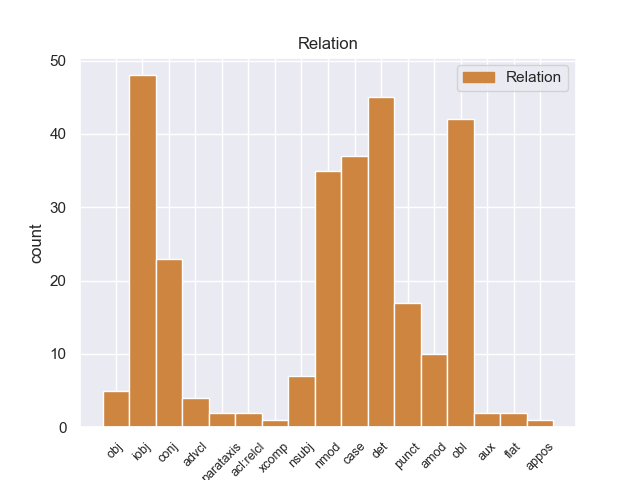
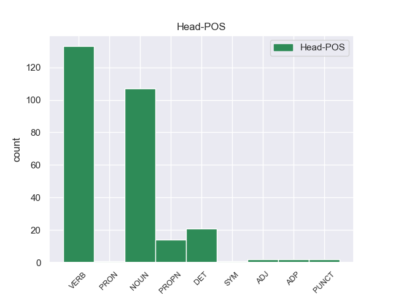
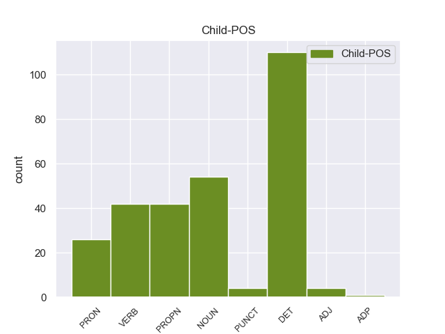

Distribution of features within this leaf



Agreement Rules sorted by frequency.
When the head token is VERB
1 Durante _ _ _ _ 0 _ _ _
2 este _ _ _ _ 0 _ _ _
3 tiempo _ _ _ _ 0 _ _ _
4 me _ _ _ _ 0 _ _ _
5 he _ _ _ _ 0 _ _ _
6 hundido _ _ _ _ 0 _ _ _
7 en _ _ _ _ 0 _ _ _
8 la _ _ _ _ 0 _ _ _
9 problemática _ _ _ _ 0 _ _ _
10 de _ _ _ _ 0 _ _ _
11 la _ _ _ _ 0 _ _ _
12 zona _ _ _ _ 0 _ _ _
13 metropolitana _ _ _ _ 0 _ _ _
14 en _ _ _ _ 0 _ _ _
15 general _ _ _ _ 0 _ _ _
16 a _ _ _ _ 0 _ _ _
17 través _ _ _ _ 0 _ _ _
18 de _ _ _ _ 0 _ _ _
19 las _ _ _ _ 0 _ _ _
20 quejas _ _ _ _ 0 _ _ _
21 y _ _ _ _ 0 _ _ _
22 demandas _ _ _ _ 0 _ _ _
23 de _ _ _ _ 0 _ _ _
24 la _ _ _ _ 0 _ _ _
25 gente _ _ _ _ 0 _ _ _
26 , _ _ _ _ 0 _ _ _
27 y _ _ _ _ 0 _ _ _
28 me _ _ _ _ 0 _ _ _
29 preguntaba _ _ _ _ 0 _ _ _
30 en _ _ _ _ 0 _ _ _
31 qué _ _ _ _ 0 _ _ _
32 diablos _ _ _ _ 0 _ _ _
33 se se DET _ Case=Acc,Dat|Person=3|PrepCase=Npr|PronType=Prs|Reflex=Yes 34 iobj _ _
34 gastaban gastaban VERB _ Mood=Ind|Number=Sing|Person=3|Tense=Past|VerbForm=Fin 0 _ _ _
35 los _ _ _ _ 0 _ _ _
36 jefes _ _ _ _ 0 _ _ _
37 delegacionales _ _ _ _ 0 _ _ _
38 de _ _ _ _ 0 _ _ _
39 la _ _ _ _ 0 _ _ _
40 capital _ _ _ _ 0 _ _ _
41 sus _ _ _ _ 0 _ _ _
42 presupuestos _ _ _ _ 0 _ _ _
43 , _ _ _ _ 0 _ _ _
44 porque _ _ _ _ 0 _ _ _
45 los _ _ _ _ 0 _ _ _
46 beneficios _ _ _ _ 0 _ _ _
47 no _ _ _ _ 0 _ _ _
48 llegan _ _ _ _ 0 _ _ _
49 a _ _ _ _ 0 _ _ _
50 la _ _ _ _ 0 _ _ _
51 gente _ _ _ _ 0 _ _ _
52 . _ _ _ _ 0 _ _ _
When the head token is VERB and the head token is NOUN
1 El _ _ _ _ 0 _ _ _
2 mandatario mandatario NOUN _ Mood=Ind|Number=Sing|Person=3|Tense=Pres|VerbForm=Fin 42 nmod _ _
3 uruguayo _ _ _ _ 0 _ _ _
4 , _ _ _ _ 0 _ _ _
5 quien _ _ _ _ 0 _ _ _
6 llegó _ _ _ _ 0 _ _ _
7 el _ _ _ _ 0 _ _ _
8 domingo _ _ _ _ 0 _ _ _
9 a _ _ _ _ 0 _ _ _
10 Paraguay _ _ _ _ 0 _ _ _
11 , _ _ _ _ 0 _ _ _
12 inició _ _ _ _ 0 _ _ _
13 este _ _ _ _ 0 _ _ _
14 lunes _ _ _ _ 0 _ _ _
15 sus _ _ _ _ 0 _ _ _
16 actividades _ _ _ _ 0 _ _ _
17 a _ _ _ _ 0 _ _ _
18 el _ _ _ _ 0 _ _ _
19 colocar _ _ _ _ 0 _ _ _
20 una _ _ _ _ 0 _ _ _
21 ofrenda _ _ _ _ 0 _ _ _
22 floral _ _ _ _ 0 _ _ _
23 en _ _ _ _ 0 _ _ _
24 el _ _ _ _ 0 _ _ _
25 Panteón _ _ _ _ 0 _ _ _
26 de _ _ _ _ 0 _ _ _
27 los _ _ _ _ 0 _ _ _
28 Héroes _ _ _ _ 0 _ _ _
29 , _ _ _ _ 0 _ _ _
30 tras _ _ _ _ 0 _ _ _
31 lo _ _ _ _ 0 _ _ _
32 cual _ _ _ _ 0 _ _ _
33 se _ _ _ _ 0 _ _ _
34 trasladó _ _ _ _ 0 _ _ _
35 a _ _ _ _ 0 _ _ _
36 el _ _ _ _ 0 _ _ _
37 Palacio _ _ _ _ 0 _ _ _
38 de _ _ _ _ 0 _ _ _
39 Gobierno _ _ _ _ 0 _ _ _
40 donde _ _ _ _ 0 _ _ _
41 fue _ _ _ _ 0 _ _ _
42 condecorado condecorado NOUN _ Mood=Ind|Number=Sing|Person=3|Tense=Pres|VerbForm=Fin 0 _ _ _
43 por _ _ _ _ 0 _ _ _
44 Lugo _ _ _ _ 0 _ _ _
45 . _ _ _ _ 0 _ _ _
When the head token is VERB and the head token is NOUN and the head token is DET
1 Uno _ _ _ _ 0 _ _ _
2 de _ _ _ _ 0 _ _ _
3 los _ _ _ _ 0 _ _ _
4 casos _ _ _ _ 0 _ _ _
5 más _ _ _ _ 0 _ _ _
6 extraños _ _ _ _ 0 _ _ _
7 y _ _ _ _ 0 _ _ _
8 más _ _ _ _ 0 _ _ _
9 enquistado _ _ _ _ 0 _ _ _
10 es _ _ _ _ 0 _ _ _
11 el _ _ _ _ 0 _ _ _
12 caso _ _ _ _ 0 _ _ _
13 de _ _ _ _ 0 _ _ _
14 el _ _ _ _ 0 _ _ _
15 bielorruso _ _ _ _ 0 _ _ _
16 Hleb _ _ _ _ 0 _ _ _
17 que _ _ _ _ 0 _ _ _
18 desde _ _ _ _ 0 _ _ _
19 que _ _ _ _ 0 _ _ _
20 fichó _ _ _ _ 0 _ _ _
21 por _ _ _ _ 0 _ _ _
22 el _ _ _ _ 0 _ _ _
23 club _ _ _ _ 0 _ _ _
24 no _ _ _ _ 0 _ _ _
25 ha _ _ _ _ 0 _ _ _
26 llegado _ _ _ _ 0 _ _ _
27 a _ _ _ _ 0 _ _ _
28 jugar _ _ _ _ 0 _ _ _
29 dos _ _ _ _ 0 _ _ _
30 partidos _ _ _ _ 0 _ _ _
31 seguidos _ _ _ _ 0 _ _ _
32 y _ _ _ _ 0 _ _ _
33 que _ _ _ _ 0 _ _ _
34 esta _ _ _ _ 0 _ _ _
35 es _ _ _ _ 0 _ _ _
36 la _ _ _ _ 0 _ _ _
37 ultima _ _ _ _ 0 _ _ _
38 temporada _ _ _ _ 0 _ _ _
39 con _ _ _ _ 0 _ _ _
40 contrato _ _ _ _ 0 _ _ _
41 en _ _ _ _ 0 _ _ _
42 el _ _ _ _ 0 _ _ _
43 club _ _ _ _ 0 _ _ _
44 culé _ _ _ _ 0 _ _ _
45 , _ _ _ _ 0 _ _ _
46 y _ _ _ _ 0 _ _ _
47 que _ _ _ _ 0 _ _ _
48 finalizará _ _ _ _ 0 _ _ _
49 su su DET _ Number=Sing|Person=3|Poss=Yes|PronType=Prs 50 det _ _
50 vinculación vinculación DET _ Mood=Ind|Number=Sing|Person=3|Tense=Past|VerbForm=Fin 0 _ _ _
51 como _ _ _ _ 0 _ _ _
52 cedido _ _ _ _ 0 _ _ _
53 en _ _ _ _ 0 _ _ _
54 el _ _ _ _ 0 _ _ _
55 Wolfburgo _ _ _ _ 0 _ _ _
56 alemán _ _ _ _ 0 _ _ _
57 . _ _ _ _ 0 _ _ _
When the head token is VERB and the head token is NOUN and the head token is DET and the head token is PROPN
1 Aun _ _ _ _ 0 _ _ _
2 así _ _ _ _ 0 _ _ _
3 , _ _ _ _ 0 _ _ _
4 los _ _ _ _ 0 _ _ _
5 soviéticos soviéticos PROPN _ Mood=Ind|Number=Sing|Person=3|Tense=Pres|VerbForm=Fin 0 _ _ _
6 y _ _ _ _ 0 _ _ _
7 británicos británicos PROPN _ Mood=Ind|Number=Sing|Person=3|Tense=Pres|VerbForm=Fin 5 nmod _ _
8 exigieron _ _ _ _ 0 _ _ _
9 previamente _ _ _ _ 0 _ _ _
10 que _ _ _ _ 0 _ _ _
11 Bulgaria _ _ _ _ 0 _ _ _
12 renunciara _ _ _ _ 0 _ _ _
13 a _ _ _ _ 0 _ _ _
14 el _ _ _ _ 0 _ _ _
15 litoral _ _ _ _ 0 _ _ _
16 de _ _ _ _ 0 _ _ _
17 el _ _ _ _ 0 _ _ _
18 sur _ _ _ _ 0 _ _ _
19 de _ _ _ _ 0 _ _ _
20 la _ _ _ _ 0 _ _ _
21 región _ _ _ _ 0 _ _ _
22 de _ _ _ _ 0 _ _ _
23 Tracia _ _ _ _ 0 _ _ _
24 ( _ _ _ _ 0 _ _ _
25 el _ _ _ _ 0 _ _ _
26 cual _ _ _ _ 0 _ _ _
27 se _ _ _ _ 0 _ _ _
28 había _ _ _ _ 0 _ _ _
29 anexado _ _ _ _ 0 _ _ _
30 en _ _ _ _ 0 _ _ _
31 junio _ _ _ _ 0 _ _ _
32 de _ _ _ _ 0 _ _ _
33 1941 _ _ _ _ 0 _ _ _
34 ) _ _ _ _ 0 _ _ _
35 , _ _ _ _ 0 _ _ _
36 devolviéndo _ _ _ _ 0 _ _ _
37 lo _ _ _ _ 0 _ _ _
38 a _ _ _ _ 0 _ _ _
39 Grecia _ _ _ _ 0 _ _ _
40 . _ _ _ _ 0 _ _ _
When the head token is VERB and the head token is NOUN and the head token is DET and the head token is PROPN and the head token is ADJ
1 El _ _ _ _ 0 _ _ _
2 presidente _ _ _ _ 0 _ _ _
3 de _ _ _ _ 0 _ _ _
4 el _ _ _ _ 0 _ _ _
5 Gobierno _ _ _ _ 0 _ _ _
6 , _ _ _ _ 0 _ _ _
7 José _ _ _ _ 0 _ _ _
8 Luis _ _ _ _ 0 _ _ _
9 Rodríguez _ _ _ _ 0 _ _ _
10 Zapatero _ _ _ _ 0 _ _ _
11 , _ _ _ _ 0 _ _ _
12 ha ha DET _ Mood=Ind|Number=Sing|Person=3|Tense=Pres|VerbForm=Fin 41 det _ _
13 conversado _ _ _ _ 0 _ _ _
14 este _ _ _ _ 0 _ _ _
15 miércoles _ _ _ _ 0 _ _ _
16 brevemente _ _ _ _ 0 _ _ _
17 con _ _ _ _ 0 _ _ _
18 el _ _ _ _ 0 _ _ _
19 primer _ _ _ _ 0 _ _ _
20 ministro _ _ _ _ 0 _ _ _
21 italiano _ _ _ _ 0 _ _ _
22 , _ _ _ _ 0 _ _ _
23 Silvio _ _ _ _ 0 _ _ _
24 Berlusconi _ _ _ _ 0 _ _ _
25 , _ _ _ _ 0 _ _ _
26 minutos _ _ _ _ 0 _ _ _
27 antes _ _ _ _ 0 _ _ _
28 de _ _ _ _ 0 _ _ _
29 el _ _ _ _ 0 _ _ _
30 inicio _ _ _ _ 0 _ _ _
31 de _ _ _ _ 0 _ _ _
32 la _ _ _ _ 0 _ _ _
33 cumbre _ _ _ _ 0 _ _ _
34 de _ _ _ _ 0 _ _ _
35 líderes _ _ _ _ 0 _ _ _
36 europeos _ _ _ _ 0 _ _ _
37 en _ _ _ _ 0 _ _ _
38 la _ _ _ _ 0 _ _ _
39 que _ _ _ _ 0 _ _ _
40 se _ _ _ _ 0 _ _ _
41 debatirá debatirá ADJ _ Mood=Ind|Number=Sing|Person=3|Tense=Pres|VerbForm=Fin 0 _ _ _
42 un _ _ _ _ 0 _ _ _
43 plan _ _ _ _ 0 _ _ _
44 global _ _ _ _ 0 _ _ _
45 para _ _ _ _ 0 _ _ _
46 combatir _ _ _ _ 0 _ _ _
47 la _ _ _ _ 0 _ _ _
48 crisis _ _ _ _ 0 _ _ _
49 de _ _ _ _ 0 _ _ _
50 deuda _ _ _ _ 0 _ _ _
51 de _ _ _ _ 0 _ _ _
52 la _ _ _ _ 0 _ _ _
53 eurozona _ _ _ _ 0 _ _ _
54 . _ _ _ _ 0 _ _ _
When the head token is VERB and the head token is NOUN and the head token is DET and the head token is PROPN and the head token is ADJ and the head token is ADP
1 El _ _ _ _ 0 _ _ _
2 25 _ _ _ _ 0 _ _ _
3 de _ _ _ _ 0 _ _ _
4 mayo _ _ _ _ 0 _ _ _
5 , _ _ _ _ 0 _ _ _
6 paseando _ _ _ _ 0 _ _ _
7 por _ _ _ _ 0 _ _ _
8 el _ _ _ _ 0 _ _ _
9 muelle _ _ _ _ 0 _ _ _
10 de _ _ _ _ 0 _ _ _
11 Concarneau _ _ _ _ 0 _ _ _
12 con _ _ _ _ 0 _ _ _
13 Annah _ _ _ _ 0 _ _ _
14 , _ _ _ _ 0 _ _ _
15 el _ _ _ _ 0 _ _ _
16 mono _ _ _ _ 0 _ _ _
17 y _ _ _ _ 0 _ _ _
18 tres _ _ _ _ 0 _ _ _
19 parejas _ _ _ _ 0 _ _ _
20 más _ _ _ _ 0 _ _ _
21 de _ _ _ _ 0 _ _ _
22 artistas _ _ _ _ 0 _ _ _
23 , _ _ _ _ 0 _ _ _
24 tuvieron _ _ _ _ 0 _ _ _
25 un _ _ _ _ 0 _ _ _
26 enfrentamiento _ _ _ _ 0 _ _ _
27 con _ _ _ _ 0 _ _ _
28 unos _ _ _ _ 0 _ _ _
29 marinos _ _ _ _ 0 _ _ _
30 que _ _ _ _ 0 _ _ _
31 se se DET _ Case=Acc,Dat|Person=3|PrepCase=Npr|PronType=Prs|Reflex=Yes 32 iobj _ _
32 burlaban burlaban ADP _ Mood=Ind|Number=Sing|Person=3|Tense=Past|VerbForm=Fin 0 _ _ _
33 . _ _ _ _ 0 _ _ _
When the head token is VERB and the head token is NOUN and the head token is DET and the head token is PROPN and the head token is ADJ and the head token is ADP and the head token is PUNCT
1 Julio _ _ _ _ 0 _ _ _
2 Rodríguez _ _ _ _ 0 _ _ _
3 Martínez _ _ _ _ 0 _ _ _
4 fue _ _ _ _ 0 _ _ _
5 Doctor _ _ _ _ 0 _ _ _
6 en _ _ _ _ 0 _ _ _
7 Ciencias _ _ _ _ 0 _ _ _
8 y _ _ _ _ 0 _ _ _
9 en _ _ _ _ 0 _ _ _
10 Farmacia _ _ _ _ 0 _ _ _
11 por _ _ _ _ 0 _ _ _
12 la _ _ _ _ 0 _ _ _
13 Universidad _ _ _ _ 0 _ _ _
14 de _ _ _ _ 0 _ _ _
15 Madrid _ _ _ _ 0 _ _ _
16 , _ _ _ _ 0 _ _ _
17 catedrático catedrático PUNCT _ Mood=Ind|Number=Sing|Person=3|Tense=Pres|VerbForm=Fin 0 _ _ _
18 de _ _ _ _ 0 _ _ _
19 Cristalografía _ _ _ _ 0 _ _ _
20 y _ _ _ _ 0 _ _ _
21 Mineralogía _ _ _ _ 0 _ _ _
22 en _ _ _ _ 0 _ _ _
23 el _ _ _ _ 0 _ _ _
24 Universidad _ _ _ _ 0 _ _ _
25 de _ _ _ _ 0 _ _ _
26 Salamanca _ _ _ _ 0 _ _ _
27 y _ _ _ _ 0 _ _ _
28 en _ _ _ _ 0 _ _ _
29 la _ _ _ _ 0 _ _ _
30 Universidad _ _ _ _ 0 _ _ _
31 Autónoma _ _ _ _ 0 _ _ _
32 de _ _ _ _ 0 _ _ _
33 Madrid _ _ _ _ 0 _ _ _
34 , _ _ _ _ 0 _ _ _
35 de _ _ _ _ 0 _ _ _
36 la _ _ _ _ 0 _ _ _
37 que _ _ _ _ 0 _ _ _
38 también _ _ _ _ 0 _ _ _
39 fue fue DET _ Mood=Ind|Number=Sing|Person=3|Tense=Past|VerbForm=Fin 17 det _ _
40 rector _ _ _ _ 0 _ _ _
When the head token is VERB and the head token is NOUN and the head token is DET and the head token is PROPN and the head token is ADJ and the head token is ADP and the head token is PUNCT and the head token is SYM
1 Las _ _ _ _ 0 _ _ _
2 milicias milicias NOUN _ Mood=Ind|Number=Sing|Person=3|Tense=Past|VerbForm=Fin 13 nmod _ _
3 de _ _ _ _ 0 _ _ _
4 el _ _ _ _ 0 _ _ _
5 Virreinato _ _ _ _ 0 _ _ _
6 de _ _ _ _ 0 _ _ _
7 el _ _ _ _ 0 _ _ _
8 Río _ _ _ _ 0 _ _ _
9 de _ _ _ _ 0 _ _ _
10 la _ _ _ _ 0 _ _ _
11 Plata _ _ _ _ 0 _ _ _
12 fueron _ _ _ _ 0 _ _ _
13 reorganizadas reorganizadas SYM _ Mood=Ind|Number=Sing|Person=3|Tense=Past|VerbForm=Fin 0 _ _ _
14 a _ _ _ _ 0 _ _ _
15 partir _ _ _ _ 0 _ _ _
16 de _ _ _ _ 0 _ _ _
17 el _ _ _ _ 0 _ _ _
18 " _ _ _ _ 0 _ _ _
19 Reglamento _ _ _ _ 0 _ _ _
20 para _ _ _ _ 0 _ _ _
21 las _ _ _ _ 0 _ _ _
22 Milicias _ _ _ _ 0 _ _ _
23 , _ _ _ _ 0 _ _ _
24 disciplinas _ _ _ _ 0 _ _ _
25 de _ _ _ _ 0 _ _ _
26 Infantería _ _ _ _ 0 _ _ _
27 y _ _ _ _ 0 _ _ _
28 Caballería _ _ _ _ 0 _ _ _
29 de _ _ _ _ 0 _ _ _
30 el _ _ _ _ 0 _ _ _
31 Virreynato _ _ _ _ 0 _ _ _
32 de _ _ _ _ 0 _ _ _
33 Buenos _ _ _ _ 0 _ _ _
34 Ayres _ _ _ _ 0 _ _ _
35 , _ _ _ _ 0 _ _ _
36 aprobado _ _ _ _ 0 _ _ _
37 por _ _ _ _ 0 _ _ _
38 S. _ _ _ _ 0 _ _ _
39 M. _ _ _ _ 0 _ _ _
40 y _ _ _ _ 0 _ _ _
41 mandado _ _ _ _ 0 _ _ _
42 observar _ _ _ _ 0 _ _ _
43 inviolablemente _ _ _ _ 0 _ _ _
44 " _ _ _ _ 0 _ _ _
45 , _ _ _ _ 0 _ _ _
46 aprobado _ _ _ _ 0 _ _ _
47 por _ _ _ _ 0 _ _ _
48 Real _ _ _ _ 0 _ _ _
49 Cédula _ _ _ _ 0 _ _ _
50 de _ _ _ _ 0 _ _ _
51 el _ _ _ _ 0 _ _ _
52 14 _ _ _ _ 0 _ _ _
53 de _ _ _ _ 0 _ _ _
54 enero _ _ _ _ 0 _ _ _
55 de _ _ _ _ 0 _ _ _
56 1801 _ _ _ _ 0 _ _ _
57 . _ _ _ _ 0 _ _ _
Disagree Examples:
1 Quiero _ _ _ _ 0 _ _ _
2 responder _ _ _ _ 0 _ _ _
3 a _ _ _ _ 0 _ _ _
4 el _ _ _ _ 0 _ _ _
5 comentario _ _ _ _ 0 _ _ _
6 que _ _ _ _ 0 _ _ _
7 acabo _ _ _ _ 0 _ _ _
8 de _ _ _ _ 0 _ _ _
9 ver _ _ _ _ 0 _ _ _
10 sobre _ _ _ _ 0 _ _ _
11 el _ _ _ _ 0 _ _ _
12 Hotel _ _ _ _ 0 _ _ _
13 Puerta _ _ _ _ 0 _ _ _
14 de _ _ _ _ 0 _ _ _
15 el _ _ _ _ 0 _ _ _
16 Camino _ _ _ _ 0 _ _ _
17 y _ _ _ _ 0 _ _ _
18 en _ _ _ _ 0 _ _ _
19 concreto _ _ _ _ 0 _ _ _
20 sobre _ _ _ _ 0 _ _ _
21 su _ _ _ _ 0 _ _ _
22 director _ _ _ _ 0 _ _ _
23 , _ _ _ _ 0 _ _ _
24 yo _ _ _ _ 0 _ _ _
25 he _ _ _ _ 0 _ _ _
26 estado _ _ _ _ 0 _ _ _
27 en _ _ _ _ 0 _ _ _
28 varias _ _ _ _ 0 _ _ _
29 ocasiones _ _ _ _ 0 _ _ _
30 en _ _ _ _ 0 _ _ _
31 ese _ _ _ _ 0 _ _ _
32 restaurante _ _ _ _ 0 _ _ _
33 y _ _ _ _ 0 _ _ _
34 de _ _ _ _ 0 _ _ _
35 hecho _ _ _ _ 0 _ _ _
36 acompañe _ _ _ _ 0 _ _ _
37 a _ _ _ _ 0 _ _ _
38 una _ _ _ _ 0 _ _ _
39 amiga _ _ _ _ 0 _ _ _
40 para _ _ _ _ 0 _ _ _
41 que _ _ _ _ 0 _ _ _
42 se _ _ _ _ 0 _ _ _
43 informara _ _ _ _ 0 _ _ _
44 sobre _ _ _ _ 0 _ _ _
45 su _ _ _ _ 0 _ _ _
46 boda _ _ _ _ 0 _ _ _
47 yy _ _ _ _ 0 _ _ _
48 su _ _ _ _ 0 _ _ _
49 director _ _ _ _ 0 _ _ _
50 nos yo PRON _ Case=Acc,Dat|Number=Plur|Person=1|PrepCase=Npr|PronType=Prs 51 obj _ _
51 atendió atender VERB _ Mood=Ind|Number=Sing|Person=3|Tense=Past|VerbForm=Fin 0 _ _ _
52 con _ _ _ _ 0 _ _ _
53 mucha _ _ _ _ 0 _ _ _
54 amabilidad _ _ _ _ 0 _ _ _
55 y _ _ _ _ 0 _ _ _
56 poniendo _ _ _ _ 0 _ _ _
57 todo _ _ _ _ 0 _ _ _
58 su _ _ _ _ 0 _ _ _
59 cariño _ _ _ _ 0 _ _ _
60 e _ _ _ _ 0 _ _ _
61 interés _ _ _ _ 0 _ _ _
62 por _ _ _ _ 0 _ _ _
63 lo _ _ _ _ 0 _ _ _
64 que _ _ _ _ 0 _ _ _
65 le _ _ _ _ 0 _ _ _
66 comentamos _ _ _ _ 0 _ _ _
67 . _ _ _ _ 0 _ _ _
1 Quiero _ _ _ _ 0 _ _ _
2 responder _ _ _ _ 0 _ _ _
3 a _ _ _ _ 0 _ _ _
4 el _ _ _ _ 0 _ _ _
5 comentario _ _ _ _ 0 _ _ _
6 que _ _ _ _ 0 _ _ _
7 acabo _ _ _ _ 0 _ _ _
8 de _ _ _ _ 0 _ _ _
9 ver _ _ _ _ 0 _ _ _
10 sobre _ _ _ _ 0 _ _ _
11 el _ _ _ _ 0 _ _ _
12 Hotel _ _ _ _ 0 _ _ _
13 Puerta _ _ _ _ 0 _ _ _
14 de _ _ _ _ 0 _ _ _
15 el _ _ _ _ 0 _ _ _
16 Camino _ _ _ _ 0 _ _ _
17 y _ _ _ _ 0 _ _ _
18 en _ _ _ _ 0 _ _ _
19 concreto _ _ _ _ 0 _ _ _
20 sobre _ _ _ _ 0 _ _ _
21 su _ _ _ _ 0 _ _ _
22 director _ _ _ _ 0 _ _ _
23 , _ _ _ _ 0 _ _ _
24 yo _ _ _ _ 0 _ _ _
25 he _ _ _ _ 0 _ _ _
26 estado _ _ _ _ 0 _ _ _
27 en _ _ _ _ 0 _ _ _
28 varias _ _ _ _ 0 _ _ _
29 ocasiones _ _ _ _ 0 _ _ _
30 en _ _ _ _ 0 _ _ _
31 ese _ _ _ _ 0 _ _ _
32 restaurante _ _ _ _ 0 _ _ _
33 y _ _ _ _ 0 _ _ _
34 de _ _ _ _ 0 _ _ _
35 hecho _ _ _ _ 0 _ _ _
36 acompañe _ _ _ _ 0 _ _ _
37 a _ _ _ _ 0 _ _ _
38 una _ _ _ _ 0 _ _ _
39 amiga _ _ _ _ 0 _ _ _
40 para _ _ _ _ 0 _ _ _
41 que _ _ _ _ 0 _ _ _
42 se _ _ _ _ 0 _ _ _
43 informara _ _ _ _ 0 _ _ _
44 sobre _ _ _ _ 0 _ _ _
45 su _ _ _ _ 0 _ _ _
46 boda _ _ _ _ 0 _ _ _
47 yy _ _ _ _ 0 _ _ _
48 su _ _ _ _ 0 _ _ _
49 director _ _ _ _ 0 _ _ _
50 nos _ _ _ _ 0 _ _ _
51 atendió _ _ _ _ 0 _ _ _
52 con _ _ _ _ 0 _ _ _
53 mucha _ _ _ _ 0 _ _ _
54 amabilidad _ _ _ _ 0 _ _ _
55 y _ _ _ _ 0 _ _ _
56 poniendo _ _ _ _ 0 _ _ _
57 todo _ _ _ _ 0 _ _ _
58 su _ _ _ _ 0 _ _ _
59 cariño _ _ _ _ 0 _ _ _
60 e _ _ _ _ 0 _ _ _
61 interés _ _ _ _ 0 _ _ _
62 por _ _ _ _ 0 _ _ _
63 lo _ _ _ _ 0 _ _ _
64 que _ _ _ _ 0 _ _ _
65 le él PRON _ Case=Dat|Number=Sing|Person=3|PronType=Prs 66 iobj _ _
66 comentamos comentar VERB _ Mood=Ind|Number=Plur|Person=1|Tense=Pres|VerbForm=Fin 0 _ _ _
67 . _ _ _ _ 0 _ _ _
1 Quiero _ _ _ _ 0 _ _ _
2 responder _ _ _ _ 0 _ _ _
3 a _ _ _ _ 0 _ _ _
4 el _ _ _ _ 0 _ _ _
5 comentario _ _ _ _ 0 _ _ _
6 que _ _ _ _ 0 _ _ _
7 acabo _ _ _ _ 0 _ _ _
8 de _ _ _ _ 0 _ _ _
9 ver _ _ _ _ 0 _ _ _
10 sobre _ _ _ _ 0 _ _ _
11 el _ _ _ _ 0 _ _ _
12 Hotel _ _ _ _ 0 _ _ _
13 Puerta _ _ _ _ 0 _ _ _
14 de _ _ _ _ 0 _ _ _
15 el _ _ _ _ 0 _ _ _
16 Camino _ _ _ _ 0 _ _ _
17 y _ _ _ _ 0 _ _ _
18 en _ _ _ _ 0 _ _ _
19 concreto _ _ _ _ 0 _ _ _
20 sobre _ _ _ _ 0 _ _ _
21 su _ _ _ _ 0 _ _ _
22 director _ _ _ _ 0 _ _ _
23 , _ _ _ _ 0 _ _ _
24 yo _ _ _ _ 0 _ _ _
25 he _ _ _ _ 0 _ _ _
26 estado _ _ _ _ 0 _ _ _
27 en _ _ _ _ 0 _ _ _
28 varias _ _ _ _ 0 _ _ _
29 ocasiones _ _ _ _ 0 _ _ _
30 en _ _ _ _ 0 _ _ _
31 ese _ _ _ _ 0 _ _ _
32 restaurante _ _ _ _ 0 _ _ _
33 y _ _ _ _ 0 _ _ _
34 de _ _ _ _ 0 _ _ _
35 hecho _ _ _ _ 0 _ _ _
36 acompañe _ _ _ _ 0 _ _ _
37 a _ _ _ _ 0 _ _ _
38 una _ _ _ _ 0 _ _ _
39 amiga _ _ _ _ 0 _ _ _
40 para _ _ _ _ 0 _ _ _
41 que _ _ _ _ 0 _ _ _
42 se _ _ _ _ 0 _ _ _
43 informara _ _ _ _ 0 _ _ _
44 sobre _ _ _ _ 0 _ _ _
45 su _ _ _ _ 0 _ _ _
46 boda _ _ _ _ 0 _ _ _
47 yy _ _ _ _ 0 _ _ _
48 su _ _ _ _ 0 _ _ _
49 director _ _ _ _ 0 _ _ _
50 nos _ _ _ _ 0 _ _ _
51 atendió _ _ _ _ 0 _ _ _
52 con _ _ _ _ 0 _ _ _
53 mucha _ _ _ _ 0 _ _ _
54 amabilidad _ _ _ _ 0 _ _ _
55 y _ _ _ _ 0 _ _ _
56 poniendo _ _ _ _ 0 _ _ _
57 todo _ _ _ _ 0 _ _ _
58 su _ _ _ _ 0 _ _ _
59 cariño _ _ _ _ 0 _ _ _
60 e _ _ _ _ 0 _ _ _
61 interés _ _ _ _ 0 _ _ _
62 por _ _ _ _ 0 _ _ _
63 lo él PRON _ Case=Acc|Gender=Masc|Number=Sing|Person=3|PrepCase=Npr|PronType=Prs 0 _ _ _
64 que _ _ _ _ 0 _ _ _
65 le _ _ _ _ 0 _ _ _
66 comentamos comentar VERB _ Mood=Ind|Number=Plur|Person=1|Tense=Pres|VerbForm=Fin 63 acl:relcl _ SpaceAfter=No
67 . _ _ _ _ 0 _ _ _